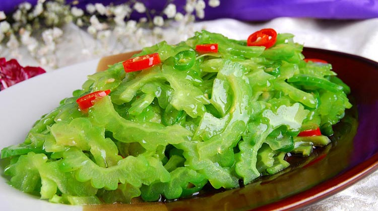
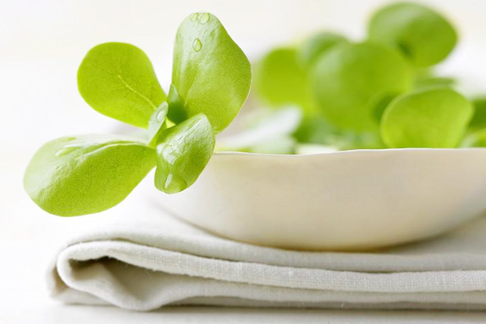
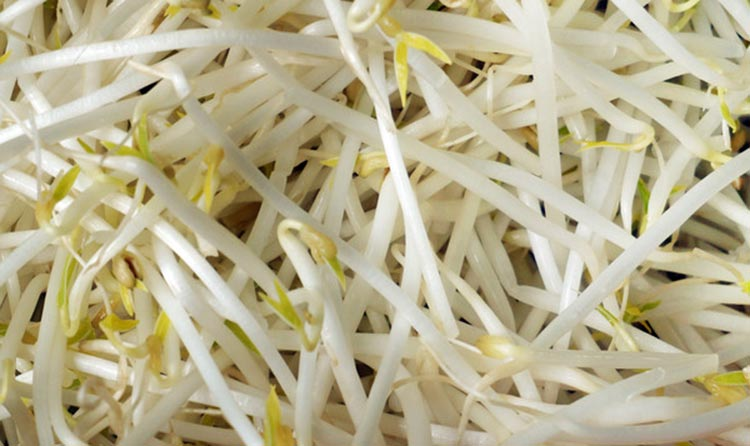
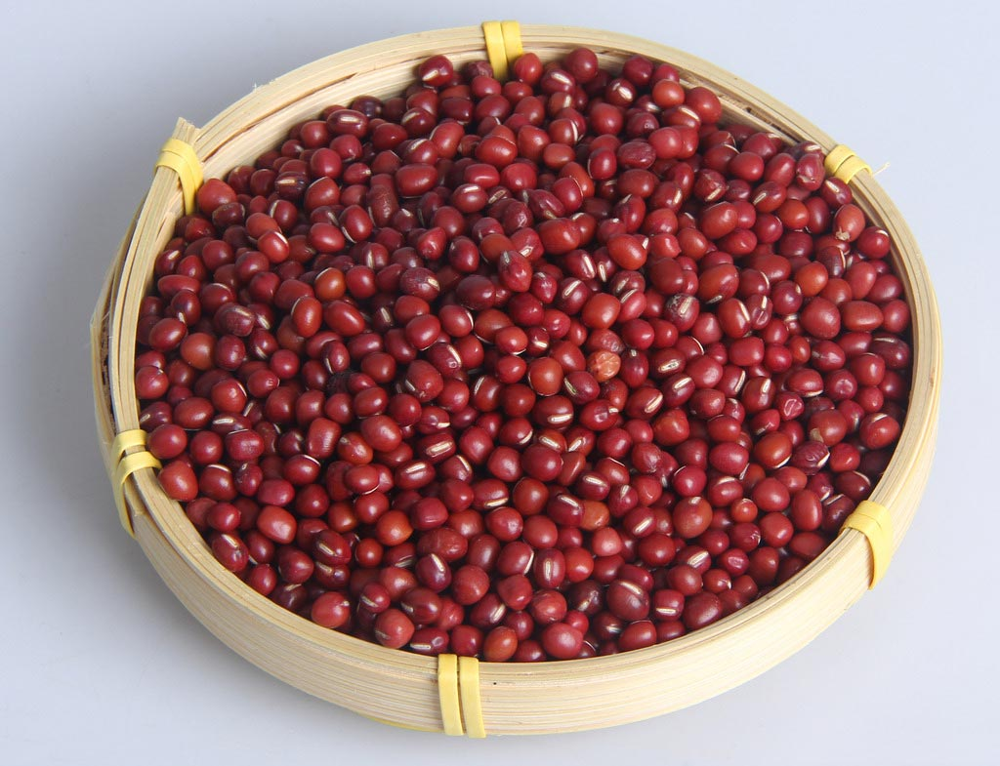
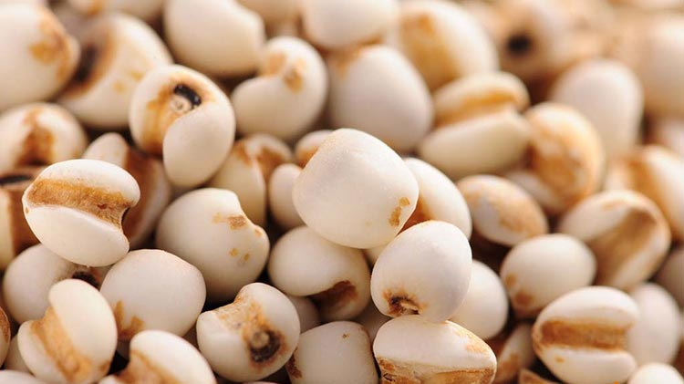

夏季祛湿的五种食物
夏季人体内部容易积累湿气，那么夏季祛湿吃什么好呢?下面就让小编带你来看看夏季祛湿的5大食物吧。夏季湿气重吃这5种食物
1.苦瓜
苦瓜味苦、性寒，入心、肝、脾、肺经，具有清热祛湿、明目解毒、利尿凉血的功效。由于苦瓜中含奎宁，具有清热解毒、祛湿止痒之功。可用于治疗热毒、疖疮、痱子、湿疹等病症。
2.马齿苋
马齿苋营养丰富，食疗作用显著，因此被称为“长寿菜”。中医认为马齿苋有清热解毒、祛湿凉血的作用。可以治疗湿热痢疾、疮疡肿毒、湿疹皮炎等症。
3.绿豆芽
绿豆芽的营养价值毫不逊色，它不仅含有蛋白质、胡萝卜素、钙、磷、铁等多种矿物质，而且还含有丰富的维生素，特别是维生素C的含量尤其丰富。绿豆芽具有清热解毒、利尿除湿的作用。适用于湿热郁滞、小便赤热、便秘、目赤肿痛等患者食用。
4.红豆
红豆可以补血，亦可以除湿。从中医角度来讲，红豆性平，味甘、酸;有健脾利水、清热除湿、消肿解毒的功效。用红豆煮水喝，可以很好地排出体内的湿气。红豆还可以做豆浆、甜品等。
5.薏米
薏米有利水消肿、健脾去湿、清热排脓等功效。优质的薏米没有霉味也不长毛。将薏米和红豆同煮，喝水吃豆子，长期坚持就会有效果了。单独吃薏米或者家里有粉碎机的可以将其打磨成粉，冲调饮用，祛湿效果比煮粥更胜一筹。
